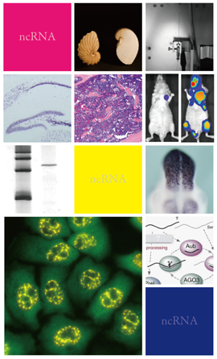

About-ncRNA

Recent studies have uncovered numerous non-coding RNAs (ncRNAs), which account for large proportion of eukaryotic transcriptomes. Although we do know that ncRNAs are important for many biological events, we do not know exactly how they function in our cells. It is considered that most of ncRNA do not work by themselves, but rather act as components of effector ribonucleoprotein complexes (RNPs) together with protein counterparts. To elucidate the biological roles of ncRNAs, we focus on the ncRNA effector complex and its action, which we collectively designate as "ncRNA functional machinery". Our goal is to understand the molecular basis, regulatory mechanism, and physiological function of ncRNA functional machinery. In addition, we also promote clinical application of ncRNAs based on understanding of ncRNA functional machinery.
Members
Project Research Members
- Yukihide Tomari
- Takeo Suzuki
- Kumiko Ui-Tei
- Akio Yamashita
- Takeaki Oda
- Takashi Sado
- Takanobu Nakazawa
- Yuji Kageyama
- Takeshi Wada
- Mikiko C. Siomi
- Satomi Kuramochi-Miyagawa
- Shinichi Nakagawa
- Fumitaka Takeshita
Publicly Invited Research Members （2012～2013）
- Shinya Hagiwara
- Hiroshi Murakami
- Hidenori Kiyosawa
- Hisashi Tadakuma
- Yukiko Kurihara
- Nobuyoshi Akimitsu
- Hiroshi Asahara
- Shinichi Horike
- Tomoyuki Honda
- Hidetoshi Hasuwa
- Yuichiro Mishima
- Kimi Araki
- Toru Fukuda
- Toshinobu Fujiwara
Publicly Invited Research Members （2010～2011）
- Derek Goto
- Susumu Katsuma
- Takahiro Matsumoto
- Nobuyoshi Akimitsu
- Shin Kobayashi
- Shinichi Horike
- Yojiro Kotake
- Hiroaki Tabara
- Yuichiro Mishima
- Toshinobu Fujiwara
Advisors
- Kyosuke Nagata
- Hideyuki Okano
- Toru Nakano
- Senya Matsufuji
- Kiyokazu Agata